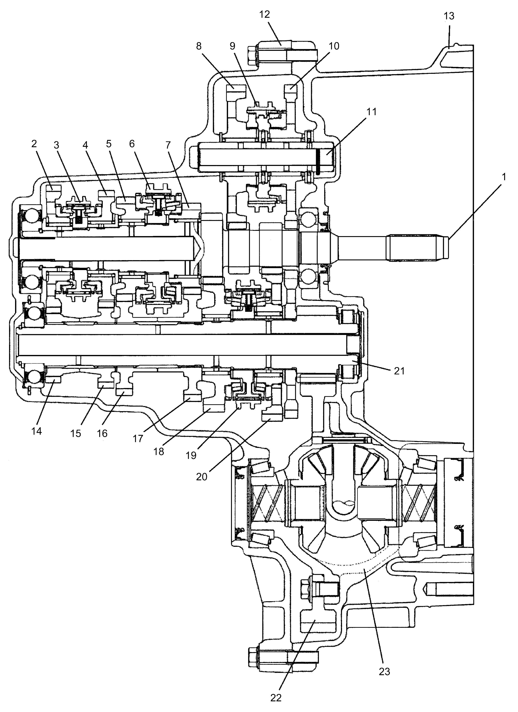
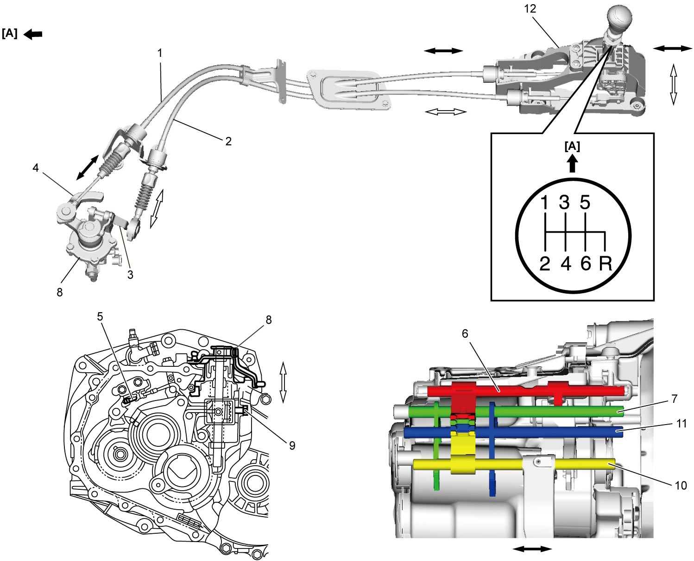

5B
| Manual Transaxle Construction |
The transaxle provides six forward speeds and one reverse speed by means of four synchromesh devices and three shafts: input shaft, countershaft and reverse gear shaft.
The low speed sleeve & hub is mounted on countershaft and engaged with countershaft 1st gear or 2nd gear, while the high speed sleeve & hub is done on input shaft and engaged with input shaft 3rd gear or 4th gear. The 5th & 6th speed sleeve & hub is mounted on input shaft and engaged with input shaft 5th gear or 6th gear. The reverse gear sleeve & hub mounted on reverse gear shaft and engaged with reverse idler left gear or reverse idler right gear.
The triple cone synchronizing mechanism is provided to 1st gear and 2nd gear synchromesh devices for high performance of shifting.
For servicing, it is necessary to use genuine sealant or its equivalent on mating surfaces of transaxle case. It is also important that all parts are thoroughly cleaned with cleaning fluid and air-dried before reassembling.
Further, care must be taken to adjust between case and shaft to thrust clearance of input shaft and countershaft. Synchronizer rings are inhibited from being lapped with respective gear cones using lapping compound before they are assembled.

 "Expand image")
| 1. | Input shaft | 9. | Reverse gear sleeve | 17. | Countershaft 3rd gear |
| 2. | Input shaft 6th gear | 10. | Right reverse idler gear | 18. | Countershaft 2nd gear |
| 3. | 5th & 6th gear sleeve & hub | 11. | Reverse gear shaft | 19. | Low speed sleeve & hub |
| 4. | Input shaft 5th gear | 12. | Left case | 20. | Countershaft 1st gear |
| 5. | Input shaft 4th gear | 13. | Right case | 21. | Countershaft |
| 6. | High speed sleeve & hub | 14. | Countershaft 6th gear | 22. | Final gear |
| 7. | Input shaft 3rd gear | 15. | Countershaft 5th gear | 23. | Differential case |
| 8. | Left reverse idler gear | 16. | Countershaft 4th gear |
Gear Shift Mechanism
The gear shifting control system consists of the following main parts. Movement of gear shift control lever is transmitted to gear shift & select shaft through gear shift and gear select cables.

 "Expand image")
| [A]: | Forward | 5. | Reverse gear shift lever | 10. | Low speed gear shift shaft |
| 1. | Gear shift control cable | 6. | Reverse gear shift shaft | 11. | High speed gear shift shaft |
| 2. | Gear select control cable | 7. | 5th & 6th gear shift shaft | 12. | Gear shift control lever assembly |
| 3. | Select cable lever | 8. | Gear shift & select shaft assembly | ||
| 4. | Shift cable lever | 9. | Gear shift interlock bolt |